Antes de profundizar en los componentes de Jetpack Compose, es importante mantener el código de
la aplicación organizado. Por lo tanto, ten en cuenta lo siguiente:
Puedes crear tantos archivos como necesites.
Si la aplicación tiene múltiples pantallas, cada pantalla debe tener su propio código de interfaz en un archivo separado.
El archivo que contiene una clase que extiende Activity no debe incluir ningún componente de interfaz de usuario.
Debes crear un componente que sirva como base de la aplicación para que pueda ser utilizado en cualquier parte.
Todos los archivos que contienen componentes de interfaz de usuario deben colocarse en la carpeta ui.
Si varios componentes pertenecen a la misma área/sección de la pantalla, debes crear un componente que los agrupe.
Siempre que un componente se repita con la misma configuración de estilo, debes crear un componente personalizado que lo extienda.
Para ilustrar todo lo anterior, modificaremos el proyecto de Click Counter de la U6
para cumplir con los puntos anteriores. Además, de ahora en adelante, especificaremos dónde se debe colocar cada elemento estudiado.
El primer paso es crear un nuevo elemento Composable llamado
ClickCounterContent:
Haz clic derecho en la carpeta ui→ Nuevo → Clase/Archivo Kotlin.
Especifica el nombre: ClickCounterContent, selecciona Archivo, y presiona Enter.
Dentro del archivo ClickCounterContent, incluye lo siguiente:
A continuación, este componente debe ser utilizado desde la función onCreate del
archivo MainActivity:
De esta manera, cada vez que se crea una nueva pantalla o se quiere previsualizar un componente, se debe usar
el componente ClickCounterContent, y se preservará el estilo de la aplicación.
Ahora, es momento de renombrar la función Content a ClickCounter.
También debes cambiar sus llamadas tanto en la función onCreate como en la previsualización.
Finalmente, moveremos la función ClickCounter a un archivo separado.
Haz clic derecho en la carpeta ui → Nuevo → Paquete.
Ingresa el nombre del paquete: screens y presiona Enter.
Haz clic derecho en la nueva carpeta screens → Nuevo → Clase/Archivo Kotlin:
Ingresa el nombre del archivo: ClickCounter, selecciona la opción Archivo, y presiona Enter.
La función ClickCounter y la previsualización ClickCounterPreview
se eliminan de MainActivity.kt y se colocan en el archivo ClickCounter:
ClickCounter.kt
@Composable
fun ClickCounter() {
var times by rememberSaveable { mutableStateOf(0) }
Column(
modifier = Modifier.fillMaxSize(),
verticalArrangement = Arrangement.Center,
horizontalAlignment = Alignment.CenterHorizontally
) {
Text(
// text = "has hecho clic $times veces",
text = stringResource(
R.string.counter_text,
times
),
fontSize = 25.sp
)
Spacer(modifier = Modifier.height(20.dp))
Button(onClick = {
times++
Log.i(
BUTTON_CLICK,
"Button pressed. Value of times: $times"
)
}) {
Text(
text = stringResource(id = R.string.clickme),
fontSize = 30.sp,
modifier = Modifier.padding(16.dp),
)
}
Spacer(modifier = Modifier.height(20.dp))
Button(
onClick = {
times = 0
Log.i(
BUTTON_CLICK,
"RESET pressed"
)
},
shape = RectangleShape,
colors = ButtonDefaults.buttonColors(
containerColor = Color.White,
contentColor = Color.Black
),
border = BorderStroke(
2.dp,
Color.Red
),
enabled = times != 0
) {
Text(
text = stringResource(id = R.string.reset),
fontSize = 15.sp,
modifier = Modifier.padding(2.dp),
)
}
}
}
@Preview(
name = "Light Mode",
showBackground = true,
showSystemUi = true,
)
@Preview(
name = "Dark Mode",
showBackground = true,
showSystemUi = true,
uiMode = Configuration.UI_MODE_NIGHT_YES
)
@Preview(
showBackground = true,
name = "English",
)
@Preview(
showBackground = true,
name = "Spanish",
group = "locale",
locale = "es",
)
@Composable
fun ClickCounterPreview() {
MyAppContent {
ClickCounter()
}
}
De esta manera, la estructura del proyecto se vuelve más organizada.
Si una pantalla va a estar compuesta por múltiples archivos, se recomienda crear un nuevo paquete (con el nombre de la pantalla) dentro de la carpeta screens.
Si algunos componentes son compartidos entre diferentes pantallas, debes crear un nuevo paquete llamado common, share, o partials y colocar esos componentes dentro de él.
Los componentes de Jetpack Compose se pueden clasificar de forma no oficial en dos tipos:
Layout
Permiten organizar los elementos de la interfaz gráfica
Box
Surface
Column
Row
Card
ConstraintLayout
Scaffod
TopAppBar
BottomBar
ModalDrawer
LazyColumn
LazyRow
LazyVerticalGrid
LazyHorizontalGrid
LazyVerticalStaggeredGrid
LazyHorizontalStaggeredGrid
...
Presentación de información
Permiten mostrar información al usuario y ofrecer interacción.
Text
TextField
Button
Image
Spacer
Switch
Slider
CheckBox
RadioButton
ElevatedButton
Icon
IconButton
SnackBar
BadgedBox
Slider
FloatingActionButton
...
En la unidad anterior, ya se han utilizado algunos componentes de Jetpack Compose: Column,
Row, Text, Button, Spacer, Surface.
La interfaz completa de las aplicaciones se creará con:
Componentes ofrecidos por Jetpack Compose
Componentes personalizados de Jetpack Compose creados al extender y agrupar
los componentes ofrecidos por Jetpack Compose.
Los componentes de Jetpack Compose son funciones etiquetadas con
@Composable.
Esto se puede observar en los componentes proporcionados por Jetpack Compose:
Para crear tu propio componente, debes crear una función etiquetada con @Composable.
Además, la documentación indica que:
Si la función @Composable no devuelve nada (el escenario más común),
su nombre debe comenzar con una letra mayúscula.
Si la función @composable devuelve algo, su nombre debe comenzar en
minúscula.
Material 3
La versión más reciente de Jetpack Compose usa Material Design 3. Material Design es un estilo de diseño de interfaz desarrollado por Google.
Todos los componentes de Jetpack Compose se pueden encontrar en la documentación oficial
con un ejemplo visual y un enlace a Material
Design 3:
para que puedas ver cómo usar el componente y las guías de estilo:
El Material Design 3 web ofrece
muy importante información
sobre cómo usar los componentes en la sección de Guidelines (guías de estilo):
ExperimentalMaterial3Api
En ocasiones, los componentes de Jetpack Compose se encuentran en una fase experimental pero se pueden usar sin problema.
En tales casos, Android Studio pedirá esta especificación.
En la ayuda contextual de Android Studio, puedes especificarlo de la siguiente manera:
Al principio del componente que contiene el componente experimental.
A lo largo del archivo actual.
Si deseas propagarlo para que el componente padre también tenga que especificarlo.
Text y BasicText
Los componentes Text y BasicText permiten mostrar una cadena de texto
en la interfaz.
La diferencia es que Text utiliza principios de Material mientras que BasicText no.
Su uso básico ya se ha estudiado en clase y es el siguiente:
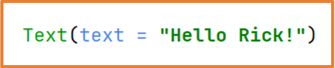
Es importante saber cómo funcionan los componentes de Jetpack Compose. Presiona CTRL y mantenlo presionado mientras
haces clic izquierdo en el nombre de la clase. También funciona si el cursor está sobre el nombre y presionas CTRL+B.
Esto abrirá el código del componente en Android Studio. Puedes hacer esto con cualquier clase, función,
o objeto…
Presionando ctrl+B sobre el componente para ver su definición.
Todas las funciones tienen documentación en KotlinDoc, donde se explican sus parámetros.
Al llamar a la función Text usando los nombres de los parámetros como recomienda Jetpack Compose, puedes alterar su orden.
Cuando usas componentes de Jetpack Compose, al igual que con cualquier clase que no es tuya, es importante verificar qué
parámetros tienen y cómo funcionan.
Con el cursor sobre una clase/función/parámetro/variable, presiona CTRL+B, y Android Studio abrirá el archivo
que la define para que puedas revisarlo.
Por ejemplo:
text necesita un String
modifier necesita un Modifier
fontWeight necesita un FontWeight
Navegando a través de los parámetros con CTRL+B, puedes aprender sobre el tipo de dato aceptado. Esto también se puede
verificar en línea en la documentación oficial.
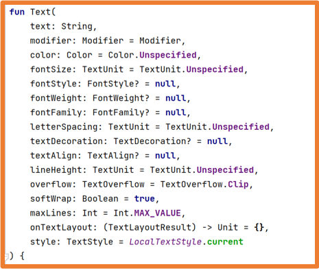
El único parámetro obligatorio es text, la cadena que se mostrará.
Todos los demás parámetros se pueden omitir (ya tienen un valor por defecto). Si los omites, Kotlin usa sus valores por defecto.
Algunos ejemplos de Text con parámetros:
Con el parámetro style, puedes configurar varias propiedades de estilo a la vez.
Aunque podrías usar los parámetros específicos como color, fontSize…
Modifier
Every component has a modifier parameter.
By default, the modifier parameter holds a Modifier object with a basic
configuration.
The Modifier object is a Companion Object with numerous
extension functions for modifying components.
Additionally, it is of the builder type, so you can chain calls to these extension
functions using periods.
The order in which you call these functions is important and creates different effects.
We can group the Modifier extension functions unofficially as follows:
The order of calling the Modifier functions changes the behavior:
Thanks to Modifier, all components can be made clickable:
The order in which clickable is placed also changes the behavior.
There are more event handlers: onFocusChanged, onKeyEvent…
If component content does not fit on the screen for any reason,
thanks to Modifier, you can specify verticalScroll or horizontalScroll
so the content can be scrolled to view it fully.
If you set a component to verticalScroll or horizontalScroll
that takes the whole screen, the rest of the elements will not be seen unless you specify a size for the scrolled
component.
If you can scroll vertically in an element, there should not be another element with a vertical scroll inside it.
If you can scroll horizontally in an element, you should not have another horizontally scrolled element inside it.
You will see more about rememberScrollState later on.
Most of the Modifier functions can be used in any scope, but some can only be used in a specific scope.
Button Component
A Button allows performing an action upon user interaction.
It has two mandatory parameters: onClick and content, both are lambda functions, and the second is the last parameter so
it can be extracted from the parentheses.
The content parameter is a lambda function that takes @Composable, meaning you can put Jetpack Compose components in its body.
Also, it implements RowScope (row scope) so it behaves like a Row, and any included components will be placed in a row.
Button defines some of its default values in the ButtonDefaults
class, and for certain customizations, you must use this class:
The Button component has different variations with
predefined styles:
Internally, all these components are of type Button.
Custom Components
To keep the code organized, it is common to create your own components that extend or group the existing Jetpack
Compose components.
To create your own component, you need to create a function tagged with
@Composable.
In addition, the documentation indicates that:
If the @Composable function does not return anything (which is most common), its name must begin with a capital letter.
If the @Composable function does return something, its name must begin with a lowercase letter.
You can design your own component that merges an Modifier internally with the
Modifier received as a parameter.
When creating a component that extends another, you can define it so that it receives a
modifier as a parameter, which can then be applied to the component being extended.
Additionally, you can combine the Modifier that is received as a parameter
with the one defined within the component by using the then method.
Be aware that the location in which you call then will alter its behavior.
Where you call then changes its behavior.
You can also specify that if a Modifier is received, that one is used; otherwise, an internal one is loaded.
Your own components let you split the code for better organization.
It is important that your custom components remain as small as possible and have
semantic names, so they are self-explanatory.
Moreover, you can create custom components that group others to reuse them all at once and better organize the
code.
Examples from above are ideal to understand this.
Spacer Component
The Spacer component lets you place space between other components and
only accepts the modifier parameter.
It is advisable to create your own component that extends Spacer to simplify its usage:
Images
In an Android application, images must be imported into the project or downloaded from the internet.
Imported images must be in one of these formats: vector, jpg, png, or webp.
With regard to raster images (jpg, png, and webp), it is preferable to use the webp
format. Thus, we will explain how to convert imported images in jpg and png formats to webp.
To add images to the project, open the Resource Manager panel on the left, then press
the + button.
To add raster images (jpg, png, and webp), select Import Drawables.
Once you choose the image, a window for import appears:
If you want, you can select a QUALIFIER, which will allow loading different sized
images depending on the device’s characteristics.
Finally, press the Import button, and the image will be ready.
To add vector images, usually icons from Google, pick Vector Asset.
It will open a window letting you choose the icon and specify its name, size, color, and opacity.
You can choose between Clip art, i.e., Google’s default icons, or
Local file if the source is external.
Finally, click Finish, and the image will be ready.
All the imported images, no matter their type, can be found in the res
folder.
If you chose QUALIFIERS, the images would appear organized according to that
QUALIFIER.
Converting raster images to webp.
Google recomienda el formato webp porque está más optimizado y ocupa menos espacio.
Usar el formato webp puede reducir el tamaño de la aplicación hasta en un 80%.
El formato webp es compatible desde la API 14 con pérdida de calidad y desde la API 18 sin pérdida de calidad.
Dado que trabajamos con API 24+ en el curso, no hay problema con la calidad.
Haz clic derecho en la imagen en el proyecto:
Elige las opciones que necesites: 100% o Lossless encoding -> maximum quality.
Una vista previa se muestra mostrando la calidad final, tamaño final y diferencias.
También puedes ajustar la calidad final si lo deseas.
La imagen de ejemplo con un 30% de calidad tiene casi ninguna pérdida y pasa de 421.3 KB a 14.5 KB (3.5% del original).
Finalmente, presiona Finish para convertir la imagen al formato webp.
Con imágenes más grandes, la optimización es más notable.
Imagen original: 7.9 MB
Imagen final: 400 KB
Reducido al 6.1%
Image Component
The Image component allows you to load imported images into the project.
The function has two mandatory parameters:
painter: indicates which resource to load.
contentDescription: description of the image.
Using the Modifier.clip() function, you can shape any component.
If you set a border, be sure to set the same shape used in the clip function.
If you tell the image to fill the available space with the ContentScale parameter,
you can specify how the image should fill that space:
With Crop: it fits to the container's smaller dimension.
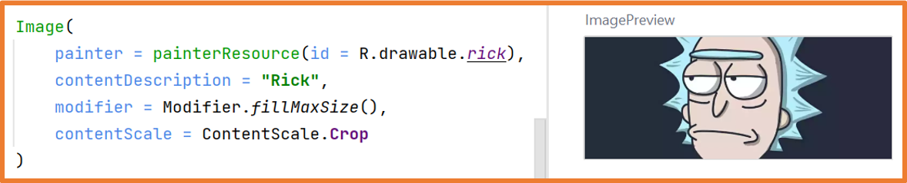
Internet Images
Using the Coil library and the AsyncImage component, you
can load images from the internet.
You need network access permission in the application. For that, in the
AdroidManifest.xml file:
manifest -> AndroidManifest.xml you must add:
In the libs.versions.toml:
in the [versions] section
coil="3.0.4"
in the [libraries] section
coil-compose = { group = "io.coil-kt.coil3", name = "coil-compose", version.ref = "coil" }
coil-network-okhttp = { group = "io.coil-kt.coil3", name = "coil-network-okhttp", version.ref = "coil" }
Next, add the dependency to the build.graddle.kts (Module: app) file
and click Sync Now in the top right corner.
When synchronization finishes, you can use the AsyncImage component.
Because @Preview (previews) do not have internet
access, you must run the application to see the result.
AsyncImage has two mandatory parameters, which are model and contentDescription.
It also provides the parameter contentScale to indicate how the image fills the available space.
AsyncImage also has the contentScale parameter to specify
how the image fills the available space.
You can shape images with AsyncImage and the Modifier.clip() function.
Coil ofrece la función crossfade para mostrar gradualmente la imagen:
Icon Component
The Icon component displays an icon in the application, similar to an
Image
but with Material Design support.
It only accepts vector or raster images (converted to webp).
It can only display one color.
By default, its size is 24dp, but it supports the following sizes:
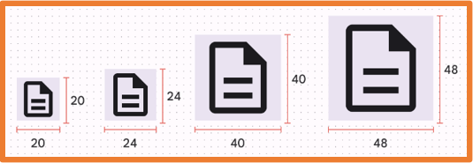
In the example, using an image as Icon discards its colors.
With the Icons class, you can use system icons.
The usual scenario is using Material Design vector icons.
Android Studio only includes some icons by default.
If you need the entire icon set, add the following dependency in:
libs.versions.toml[libraries] section,
androidx-material-icons-extended = { group = "androidx.compose.material", name = "material-icons-extended" }
Recuerda presionar Sync Now después de agregar la dependencia.
Una vez que se agrega la dependencia, todos los iconos están disponibles.
En la clase Icon, tenemos sub-clases para los iconos:
Default: mismo uso que Filled.
Filled: icono completamente en un color.
Outlined: icono mostrando solo sus bordes.
TwoTone: icono con dos colores.
Sharp: icono con esquinas anguladas.
Rounded: icono con esquinas redondeadas.
You can set the tint parameter to change the icon’s color.
Badge Component
The Badge component allows you to show dynamic information, such as the number of
pending messages.
A Badge should only display an icon or a short text.
BadgedBox Component
The BadgedBox component displays dynamic info like the number of pending messages on
top of another element such as an icon.
This is commonly used in navigation bars.
Divider Components
There are three Divider components:
Divider: available until material3 v1.1.1, deprecated in material3 v1.2.0.
HorizontalDivider: available in material3 v1.2.0.
VerticalDivider: available in material3 v1.2.0.
Since version 1.2.0 is in Alpha, you can still use the Divider component.
If you want to use HorizontalDivider and VerticalDivider, you must update the dependency in build.gradle.kts (Module) and synchronize.
Divider (a horizontal line), HorizontalDivider, and
VerticalDivider
draw a line to separate items, usually in Rows or Columns.
The three components share the same parameters: modifier, thickness and color.
Create a project in Android Studio named ProfileYou.
Using the components seen so far in this unit, design a screen that acts as a user profile in a social network,
showing:
Your name
A photo of you (ID style)
A list of hobbies or likes, each with an icon in front of it
A button to follow or unfollow
Two small images of whatever you want
A button with an icon to like or unlike each of those images
A BadgedBox with an envelope icon indicating the number of unread messages
A button at the bottom with a + that increments the message count
The application might look something like this:
Here is a possible solution; remember, it is only a
reference, and you should attempt it on your own.
Concepts
Composition and Recomposition
Composition and recomposition are typical behaviors in
declarative user interfaces.
Composition: the first-time execution of a composition function (@Composable)
-> rendering a component in the interface.
Recomposition: the second or more times that a composition function
(@Composable) is executed -> re-rendering the interface only for the affected components.
If, during execution, a component changes, that component is recomposed.
Hence, the user interface is always displaying the latest version of the component.
States
In Jetpack Compose, a state is a variable tied to the application’s state.
If, while the application runs, a state (a variable tied to the application’s state)
changes value,
any interface elements depending on it are recomposed (re-rendered).
In the example from UD6 "Clicks Counter", we used a state to re-render the
interface when the button is pressed.
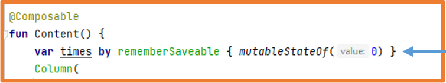
mutableStateOf: indicates that the variable is a state
(a variable tied to the application’s state).
If this variable changes, any @Composable functions using it recompose.
The problem is, if the function @Composable is re-executed, the state
reverts to its initial value.
We can address this with:
remember: tells Android that a variable should be remembered
during recomposition.
rememberSaveable: the above plus it also remains after the
Activity is destroyed and recreated.
States can be created with = but that means you must use .value
to get and set the state’s value.
To simplify usage of states, you can use the by delegate,
as shown in the examples, letting you refer to the state with the variable’s name itself.
When we talked about the modifier parameter,
we mentioned that if the content of a component does not fit on the screen, you can set
verticalScroll or horizontalScroll for scrolling
to see it all.
We used rememberScrollState for that.
This function sets a state via rememberSaveable, so
the scroll state is also remembered upon orientation/config changes:
Thanks to recomposition, it is easy to change the interface’s appearance:
Another example
Components for Inputting Information
Below we will see a set of Jetpack Compose components that allow collecting user
information.
These components are typically used for forms or settings screens.
Since these components change as the user inputs or selects data, you must use states to manage them properly.
TextField Component
TextField components let the user type data from the device’s keyboard.
There are three types of TextField:
BasicTextField: a basic text field.
TextField: uses Material principles.
OutlinedTextField: same as TextField but with a default border in the shape parameter.
As we saw previously, it is important to know the parameters that components can have.
All parameters that accept a lambda function allow you to do something.
If the lambda is also @Composable, you can include more Jetpack Compose components
inside.
Example with two fields, one for the email and one for the password:
Example with two fields, one for the email and one for the password
Example of a password field that allows revealing the typed text:
Example of a password field allowing you to see typed text
Example in which the button only activates if the fields have data:
Thanks to states and recomposition, you do not need an if to enable the button:
The keyboardOptions parameter allows controlling the type of keyboard displayed.
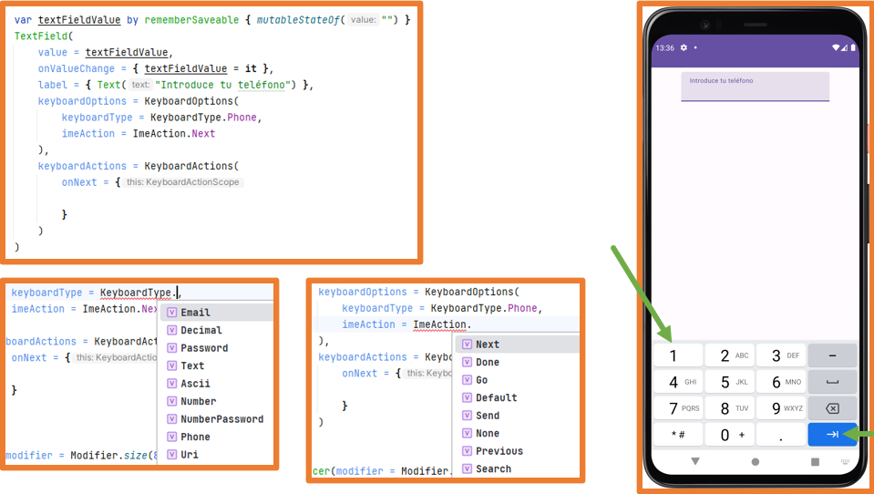
The keyboardActions parameter lets you specify what happens when the user presses the (imeAction) button.
State Hoisting
As mentioned earlier, it is quite common to create custom components that wrap one or more Jetpack Compose
components.
At this point, there are two possibilities:
Stateless component: your own component that does not declare a state.
Stateful component: your own component that declares a state.
Stateless Stateful
From outside a stateful component, you cannot access its
state.
Imagine a form where all the components are custom and stateful.
How would you access the data the user entered?
In the above example, all components are coded directly, so it’s not an issue, but
what if you had extracted the components as recommended for code cleanliness?
Extracting components as custom components
The solution to this is State Hoisting to access the state externally.
By using State Hoisting, the state is not declared inside the stateful component,
turning it into a stateless component. The recommended practice is to keep all components
stateless whenever possible.
If a component has a state that you do not need externally, that component may remain
stateful.
The State Hoisting technique consists of removing the state from a stateful
component (thus making it stateless)
and replacing it with two parameters that must be provided at use time:
One to give the component the value
Another that is a lambda to modify that value.
This technique is already used by the TextField component.
Previous example applying State Hoisting:
Stateless components How to use the components
You can do it in a cleaner manner using = instead of by.
Single state Multiple states
Switch Component
The Switch are toggles used to enable or disable functionality.
They are commonly found in preferences sections.
The thumbContent parameter lets you add an icon to the switch.
You can also customize the colors:
Create a new project in Android Studio named ConverterV2You
The application must have:
Your name
A photo of you (ID style)
A text field for the user to input a number to convert to binary or decimal.
A switch (Switch) to decide whether to convert to decimal or binary.
A button to perform the conversion.
A text showing the result. It will be one color if binary or another if decimal.
A button to clear both the text field and the converted result.
Here’s an example of what the application might look like:
At this link you can find a solution
in GitHub. Again, it is only a reference; you are expected to try it on your own.
Checkbox Component
The Checkbox allows users to select one or several options.
You can customize its colors similarly to Switches.
Because Checkbox is usually accompanied by text,
you can create a custom component grouping a Text, a Spacer,
and a Checkbox in a Row so you can reuse it everywhere.
Here is an example of how to define it:
//Data class for MyCheckbox objects
data class Check(
var title: String,
var selected: Boolean,
var onCheckedChange: (Boolean) -> Unit
)
//Function that receives a set of titles and converts them
//into a list of Check objects
@Composable
fun getChecks(vararg titles: String): List {
return titles.map {
var state by rememberSaveable {
mutableStateOf(false)
}
Check(
title = it,
selected = state,
onCheckedChange = { selected -> state = selected }
)
}
}
//Custom stateless Checkbox component
@Composable
fun MyCheckBox(check: Check) {
Row(
verticalAlignment = Alignment.CenterVertically,
) {
Checkbox(
checked = check.selected,
onCheckedChange = { check.onCheckedChange(it) }
)
Text(text = check.title)
}
}
The TimePicker (with a dial) and TimeInput
(with a keyboard) components let you select a time.
TimePicker 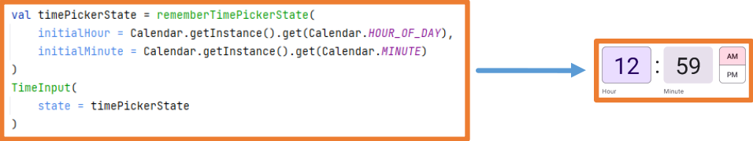 TimeInput
Chip Components
Chips are small components with text that trigger information entry,
start actions, filter content, or make selections.
There are four types:
Assist: represent predefined actions in the app, for example adding to the
calendar or how to get somewhere.
Filter: represent filters to apply to elements in a collection.
Input: represent small user-input info, e.g., after entering an email address.
Suggestion: limit user actions by showing dynamically generated suggestions.
We also have ElevatedAssistChip, ElevatedFilterChip, and ElevatedSuggestionChip variants.
Chips:
They are not buttons.
You shouldn’t use them for final actions; that’s what buttons are for.
They react to user actions.
They are contextual to the application’s content.
They should always appear as a group.
You should display them with horizontal scroll.
All Chip components are based on the private Chip
component, so they appear similarly though each has parameters matching its function.
SuggestionChip and AssistChip FilterChip and InputChip
IconButton Component
The IconButton is used when compact buttons are needed, often in toolbars.
There are several types:
IconButton
IconToggleButton
FilledIconButton
FilledToggleIconButton
FilledTonalIconButton
FilledTonalIconToggleButton
OutlinedIconButton
OutlinedIconToggleButton
The Toggle variants have two states: selected or not.
ProgressIndicator Component
The LinearProgressIndicator and CircularProgressIndicator
components allow notifying the user that an action is happening in the background.
These progress bars can be:
Indeterminate: no end point.
Determinate: starts empty and fills completely.
To make a progress bar determinate, set the progress parameter to a value between 0.0f and 1.0f.
The LinearProgressIndicator and CircularProgressIndicator
components have multiple constructors for different appearances.
Available parameters:
progress: percentage of filled progress.
color: color of the progress.
trackColor: background color of the progress.
strokeCap: shape of the progress line.
strokeWidth (only for circular): thickness of the progress line.
CircularProgressIndicator LinearProgressIndicator
SearchBar Components
There are two components to create search bars:
SearchBar: the body occupies the entire screen.
DockedSearchBar: the body occupies part of the screen (configurable).
To use these components, you must update certain versions:
build.gradle.kts (Project):
Kotlin -> 1.8.21
build.gradle.kts (Module):
kotlinCompilerExtensionVersion -> 1.4.7
compose-bom -> 2023.05.01
core-ktx -> 1.10.1
Remember to synchronize after making changes in the gradle files.
The SearchBar has various parameters for its configuration, some depending on a
state.
Thus, the minimal setup is the following:
You can use different
Thus, the minimal setup is the following:
You can use different approaches:
Filling the entire body with all items and then filtering them by the user query.
Leaving the body empty and changing it with the results based on the user query.
Creating a state for the body and changing it with the results based on the user query.
…
Usage example:
//List of all items to search
val dragonBallCharacters = listOf(
"Son Goku",
"vegeta",
"Piccolo",
"Son Gohan",
"Trunks",
"Bulma",
"Krillin",
"Master Roshi",
"Freezer",
"Cell"
)
//In some actions, we need a context (usually the Activity)
val myContext = LocalContext.current
var querySearchstate by rememberSaveable {
mutableStateOf("")
}
var activeSearchState by rememberSaveable {
mutableStateOf(false)
}
SearchBar(
query = querySearchstate,
onQueryChange = {querySearchstate = it},
onSearch = {
//Show temporary messages at the bottom of the screen (editable)
Toast.makeText(myContext, "Searching: $it", Toast.LENGTH_SHORT).show()
},
active = activeSearchState,
onActiveChange = {activeSearchState = it},
placeholder = { Text("Enter the character to search for")},
trailingIcon = { ExposedDropdownMenuDefaults.TrailingIcon(expanded = showMenu)}
) {
//Content to show with filtering
val charactersToShow = if (querySearchstate.isEmpty()){
dragonBallCharacters
}else{
dragonBallCharacters.filter {
it.contains(other = querySearchstate, ignoreCase = true)
}
}
Column{
charactersToShow.forEach {
Text(
text = it,
modifier = Modifier
.padding(8.dp)
.clickable {
Toast.makeText(myContext, "Selected $it", Toast.LENGTH_SHORT).show()
querySearchstate = it
activeSearchState = false
}
)
}
}
}
The SearchBar component from the example is deprecated as of version 1.3.0 of Material 3.
As of version 1.3.0 of Material, the SearchBar component has been overloaded with an inputField parameter, and its use is recommended.
In class, we are using version 1.2.1 of Material3 because the more recent versions still contain many experimental features.
For this course, using SearchBar as shown in the previous example will suffice.
AlertDialog Component
The AlertDialog component allows you to display a message in a modal (pop-up) window.
The confirmButton, dismissButton,
icon, title, and text
parameters are @Composable lambda functions,
so you can include any component you want inside them.
There's also the Dialog component, but it doesn't use Material principles and must be fully configured manually.
Example:
@Composable
fun ElementoComposable(){
val ctx = LocalContext.current
AlertDialog(
onDismissRequest = {
showToast(ctx, "Se ha cancelado")
},
confirmButton = {
TextButton(onClick = {
showToast(ctx, "Se ha aceptado")
}) {
Text(text = "Confirmar")
}
},
dismissButton = {
TextButton(onClick = {
showToast(ctx, "Se ha cancelado")
}) {
Text(text = "Cancelar")
}
},
icon = {
Icon(
imageVector = Icons.Default.Warning,
contentDescription = "Advertencia"
)
},
title = { Text(text = "Alert Dialog")},
text = { Text(text = "Cuerpo del diálogo")}
)
}
//Function to show the message
fun showToast(ctx:Context, txt:String){
Toast.makeText(ctx,txt,Toast.LENGTH_SHORT).show()
}
With the code above, AlertDialog will always be displayed, which is not very interesting.
The AlertDialog should be hidden and shown when a user action occurs, such as clicking a button.
To control whether it is hidden or visible, you need a variable that should be stored in the state,
so that when it changes, the screen is recomposed to show or hide it.
Create a login screen that will have the following elements:
Header: will contain the screen title for registration.
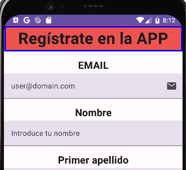 Title
Email field:
You will validate that it is an email type
A small envelope icon at the end
It has a label that says user@domain.com
Field for name, first last name, and second last name:
Max 15 characters, only letters, uppercase or lowercase, with or without accents, and spaces for compound names
It will have a label indicating what content it should have
Phone field:
You will validate that it is phone type
The keyboard will only allow numbers
A phone icon at the end
A label that indicates a phone is required
Date of birth field:
It will be a DatePicker
Favorites field:
They will be a couple of FilterChips lists
When selected, the check icon will be set
Clear form button:
It will be disabled as long as the user has not entered any data
When clicked, it returns the form to its original state
Register button:
It will be enabled when all fields are filled in.
When clicked, it checks that the data is OK.
If correct, a dialog is displayed to inform this fact.
If not, a message is shown at the top.
Bottom part:
It stays fixed at the bottom, i.e., only the form portion scrolls
Layout refers to the graphical design or arrangement of elements.
It's how you place elements within an interface.
Jetpack Compose provides a range of components to design the layout of each screen in the app.
We've already used some layout components like Surface, Column, and Row in previous sections.
Jetpack Compose offers many layout components:
Surface
ConstraintLayout
Card
Scaffold
Box
TopAppBar
BoxWithConstraints
BottomBar
Column
NavigationDrawer
Row
NavigationRail
LazyRow and LazyColumn
Layout
LazyVerticalGrid and LazyHorizontalGrid
DropDownMenu
HorizontalPager and VerticalPager
BottomSheets and SideSheets
LazyVerticalStaggeredGrid and LazyHorizontalStaggeredGrid
...
Surface Component
Surface is a container with a predefined style that follows the default Material Design theme.
The Surface component is the central axis upon which the Material Design philosophy is based.
In fact, if you look at the documentation for Scaffold, you can see that it internally makes use of a Surface.
You can change its default style, as Surface has parameters for shape, elevation, border, and colors for the
content and container.
It is recommended to use Surface as the parent element of the entire UI.
The Surface component by itself does not serve to organize interface elements.
You can use Surface as many times as you need, each time requiring a surface distinct from the rest of the UI.
Surface alone does not organize UI elements.
Its parameters are listed in the documentation.
Inside the content of Surface, you must use another layout component such as
Row or Column...
Card Component
The Card is a Surface component with predefined styling (which can be changed via parameters)
to resemble a card with borders, elevation, and shadows.
There are three types: Card, ElevatedCard, and OutlinedCard.
Inside a Card, items are organized in a column (ColumnScope).
Card Examples
Box Component
The Box component lets you position multiple elements in the same spot,
one on top of another.
A possible use case would be showing some content or a different one when a button is clicked.
BoxWithConstraints Component
The BoxWithConstraints component is a special version of Box that passes
the component’s dimensions to its content so you can use them if needed.
Column and Row Components
The Column and Row components have already been used previously.
To align content vertically or horizontally within these components, you use:
Arrangement: main axis (columns: vertical, rows: horizontal).
The FlowColumn and FlowRow components are similar to Column and Row but will wrap items to a new column or row when they no longer fit in a single column/row.
As seen so far, when there are too many components on the screen, some may end up outside the user’s view
(beyond the visible screen area).
When we discussed the modifier parameter, we mentioned that if a component’s content doesn’t fit on the screen, you can use the verticalScroll and horizontalScroll modifiers to scroll and reach everything.
However, this approach isn’t ideal because it loads all the component’s content into RAM, regardless of whether it’s visible.
The Lazy components described below solve this issue.
Lazy components automatically have a parameter that, by default, creates a rememberSaveable state
to manage their scroll states automatically.
Lazy Components
Lazy components let you display items in a list or grid layout, either horizontally or vertically.
Lazy components offer two key benefits:
If content doesn’t fit on the screen, you can scroll without extra setup.
They only load visible items (plus one prior or next), so memory is used more efficiently.
The Lazy components available are:
LazyColumn and LazyRow.
LazyVerticalGrid and LazyHorizontalGrid.
LazyVerticalStaggeredGrid and LazyHorizontalStaggeredGrid.
All Lazy components have some common parameters:
reverseLayout: boolean specifying whether to show elements in reverse order, default is false.
userScrollEnabled: boolean specifying whether scroll is enabled, default is true.
Lazy grid components have additional parameters:
columns: for a vertical grid, sets the number of columns.
rows: for a horizontal grid, sets the number of rows.
To add content in Lazy items, use:
item: adds a single element to the Lazy component.
items: iterates through a list, adding each element to the Lazy component.
The LazyVerticalStaggeredGrid and LazyHorizontalStaggeredGrid
components are similar to the above, but each element occupies only the space its content requires.
Main parameters for LazyVerticalStaggeredGrid:
columns: number of columns
verticalSpacing: vertical space between items
horizontalArrangment: horizontal space between items
In the example, a custom state is created to manage scroll for LazyVerticalStaggeredGrid and assigned to that component.
We also create a state for toggling a button. This state depends on the previous one, so we use derivedStateOf.
The state for the button changes when the first item in the list is no longer fully visible.
Finally, the button uses a coroutine (to be explained later) to move the scroll to the list's first item.
ListItem Component
Although in a column of any type you can add any kind of component, Jetpack Compose offers the
ListItem component to provide a uniform style for list elements.
A ListItem has five zones. Typically, in the
leadingContent zone you place an icon or image. In the
trailingContent zone, you also often place an icon or text.
If there is content in the overLineContent zone, the content of
leadingContent and trailingContent
will align at the top; if there is no overLineContent, they will align vertically
centered.
Component definition:
Example:
ATTENTION!! Now all the properties that previously ended with Content
end with Text
Scaffold Component
The Scaffold component is a default structure for creating complex interfaces that
Jetpack Compose provides according to Material principles.
It incorporates several common components such as:
topBar: top navigation bar.
bottomBar: bottom navigation bar.
snackbarHost: allows you to display messages that replace the old Toasts.
floatingActionButton: a floating icon generally placed at the bottom of the
screen.
Scaffold definition
The only required parameter is content, and being the last parameter and a lambda, it
can be extracted from the parentheses.
As we see previously, an Android Studio project uses Scaffold component by default
If you decide to use Scaffold, you must choose one of the following options:
Have the Scaffold be the only child of the main
Surface in the project and add the rest of the components inside that
Scaffold.
Replace the main Surface with a
Scaffold and add the rest of the components there.
Scaffold skeleton Scaffold image
You can see that the topBar, bottomBar,
snackbarHost, and floatingActionButton parameters are of
type @Composable, so you can include any Jetpack Compose component inside them.
With this, you can customize Scaffold as you wish.
Jetpack Compose offers a set of specific components for those parameters, and
it’s recommended to use them. You can also configure these parameters to customize
the interface. These components can be used without a Scaffold as well.
TopAppBar Component
The TopAppBar component allows creating an upper bar with a title and icons to
perform actions.
The only mandatory parameter is the title.
There are three more versions of topBar:
CenterAlignedTopAppBar: same as TopAppBar but title is centered.
MediumTopAppBar: the title is placed one line lower.
LargeTopAppBar: like MediumTopAppBar but with a larger title.
TopAppBar definition
Here is one configuration example:
TopAppBar example
The result would look like this:
DropDownMenu Component
It’s common for a TopAppBar to have an icon that opens a dropdown menu,
whether as a navigationIcon or among its action icons.
You create this menu with DropdownMenu and DropdownMenuItem components.
It might look something like this:
FloatingActionButton Component
FloatingActionButton (FAB) are buttons representing the most important action on a
screen. They have a predefined style and typically float over other screen elements.
They are primarily used with the Scaffold layout but can be used independently as well.
There are four different components:
FloatingActionButton: contains only an icon.
SmallFloatingActionButton: has an icon and is for smaller screens.
LargeFloatingActionButton: has an icon and is for large screens.
ExtendedFloatingActionButton: includes an icon and text, used when a FAB needs a bit more info.
In a Scaffold, you can add a FloatingActionButton placed at the bottom of the content.
You can specify whether to show it in the center or at the end (depending on reading direction for the set
language).
FloatingActionButton example
BottomBar Component
A BottomBar is a bar at the bottom containing icons generally used
to change the Scaffold content.
There are three options for creating a BottomBar:
BottomAppBar: with icons and/or text.
BottomAppBar: with icons and FloatingActionButton.
NavigationBar: bar with three, four, or five icons.
In a NavigationBar, you use NavigationBarItem
to create the navigation bar elements.
If you want, you can use NavigationBarItem within a BottomAppBar as well.
BottomAppBar
If you use BottomAppBar with icons or
text, they align to the left. If you use
NavigationBarItem, they center themselves in the available space.
BottomAppBar has a constructor with the parameters actions
and floatingActionButton.
If the Scaffold is configured with the
floatingActionButton parameter, you shouldn’t use a BottomBar
with a floatingActionButton.
NavigationBar with NavigationBarItem elements.
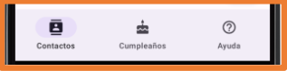
SnackBar Component
Snackbars are temporary messages that appear at the bottom of the screen.
To create a Snackbar, you need a state:
val snackBarHostState = remember {SnackBarHostState()}
In the Scaffold, you set it in the snackbarHost parameter, where you can customize
the style of the Snackbar:
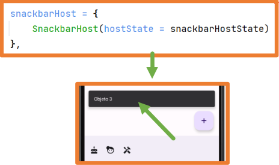 Default SnackBar Custom SnackBar
You need a coroutine to display the Snackbar (these will be explained later).
val coroutineScope = rememberCoroutineScope()
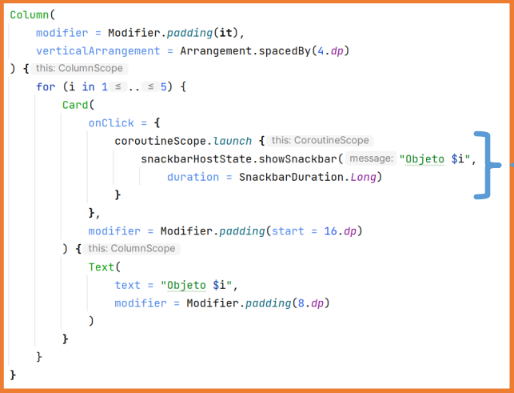
In any part of the interface where a block of instructions can be placed, the Snackbar can be launched with any desired message.
ConstraintLayout Component
All the layouts studied so far automatically manage the positioning of the elements.
The ConstraintLayout component allows you to organize elements on the screen while
explicitly specifying how they are linked to each other.
This way, those constraints stay intact even if the screen orientation changes
or the device has a different screen size.
This layout is widely used with older XML-based views, so it’s important to know
how it works for possible migrations from XML to Jetpack Compose.
It’s also important to know because it offers a lot of freedom when creating user interfaces in Android.
To use this component, you must first add a dependency:
libs.versions.toml
[versions] section.
[libraries] section.
build.graddle.kts (Module: app)
Dependencies section:
Remember sync gradle and then you can use ConstraintLayout
After adding the dependency, you can use the ConstraintLayout component
and add all the components and constraints in it.
For the components to link to one another, each component must have some reference you can use.
You can create references one at a time or in groups at once.
Once references are created, you can assign them to the ConstraintLayout components.
To assign a reference to a component, you use the constrainAs modifier.
Once references are assigned to the components, you can specify how they link to each other in the layout.
Elements can link among themselves or to the container itself, the ConstraintLayout.
The container’s reference is named parent.
To create these links, you need to know which points you can connect to.
The start and end points depend on the reading direction
set for the device’s language.
Here’s a sample scenario:
Thus, it might look like this:
Inside ConstraintLayout, you can create guides for components to anchor to.
Guides can use percentages (float from 0 to 1) or dp for their size.
You can also create barriers with two or more components that act as a guide for other
components to anchor to.
Example:
The Modal components are those that appear over the screen. There are several:
ModalNavigationDrawer
ModalBottomSheet
ModalSideSheet
...
The best-known one is ModalNavigationDrawer, also called a
hamburger menu, which appears as a lateral menu when tapped.
On devices with large screens, this menu should be replaced by another one that remains permanently visible, such
as a NavigationDrawer or a NavigationRail.
Below is an example of how to use it, so you can understand how it works. Note that some concepts (like coroutines
and navigation) will be explained later.
The Tooltips are small messages that appear when you long-press on an element.
Any component can have a Tooltip.
To use these components, you need to update certain versions:
build.gradle.kts (Project):
Kotlin -> 1.8.21
build.gradle.kts (Module):
kotlinCompilerExtensionVersion -> 1.4.7
compose-bom -> 2023.05.01
core-ktx -> 1.10.1
Remember to sync after making changes to the gradle files.
To add a Tooltip to a component, you must wrap that component in either
PlainTooltipBox or RichTooltipBox, and add the modifier
tooltipAnchor to the wrapped component.
The RichTooltipBox allows you to display more information and even some actions. It
needs a state to remain open and a coroutine to close it.
@OptIn(ExperimentalMaterial3Api::class)
@Composable
fun MComp() {
val tooltipState by remember {
mutableStateOf(RichTooltipState())
}
val scope = rememberCoroutineScope()
RichTooltipBox(
title = {Text(text = "Añadir a contactos" )},
action = {
TextButton(onClick = {
scope.launch { tooltipState.dismiss() }
}) {
Text(text = "Leer más")
}
},
text = { Text(text = "Añade amigos desde...")},
tooltipState = tooltipState
){
Button(onClick = { /*TODO*/ },
modifier = Modifier.tooltipAnchor()) {
Icon(
imageVector = Icons.Default.AddToPhotos,
contentDescription = "Añadir a contactos"
)
}
}
}
Having the state, you can trigger the RichTooltipBox whenever you want, for instance
when tapping a button to always show the information the first time that button is pressed.
scope.launch { tooltipState.show() }
P5 Practice Master/Detail
In this practice, you will create a Master/Detail application. To make it more visible, we’ll force the
application to be in landscape mode. Master-detail applications usually have a list of items on one side and a
detailed view of the selected item on the other side (the main side).
Below is an example of how the application will look.
Let’s discuss some parts of the application:
The main layout will be a Scaffold or a Surface with a Scaffold inside it.
The Scaffold will have a TopAppBar that you’ll implement in a separate file. It will look similar to the
following:
TopAppBar
Initially, when no item from the list is selected, you’ll display a message indicating a character must be
selected.
Moreover, the message will have these characteristics:
The left-side list will have a StickyHeader with the group’s initial:
The selected item will be highlighted as shown in the image (colors and icon may vary).
The list is made in a separate file, and the content will be the “spanishName” field from the characters
list.
Detail of the selected item:
May have scroll
Will appear similar to the image below.
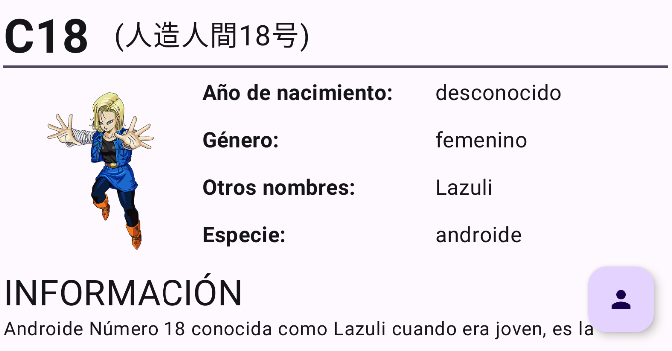 Detail
The list content and detail content will come from the file Character I’ve attached, which you’ll put in the “model” package:
File structure
This file has a data class Character containing the information for each character, plus a Companion Object
(similar to static attributes and methods in Java) holding the list of all characters and some helper
functions for usage as needed.
FloatingActionButton: tapping it will display your name and a picture of you. Tapping on the text or anywhere
on the screen will make it disappear.
FloatingActionButton
The information will look something like in the image below. Note the transparency.
User info
Submit the practice here in a compressed ZIP file with the entire folder content.
Remember to comment your code, structure it, and do build -> Clean Project before submission.